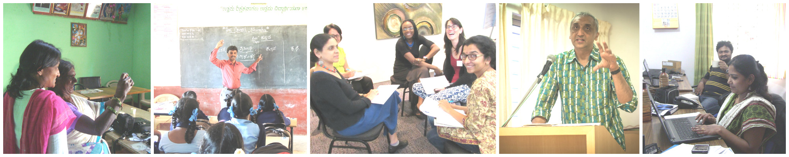
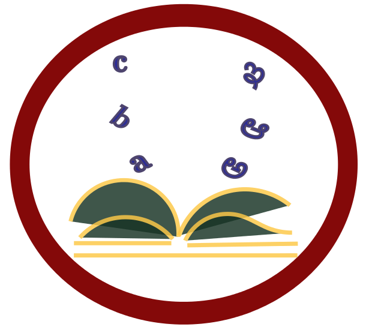
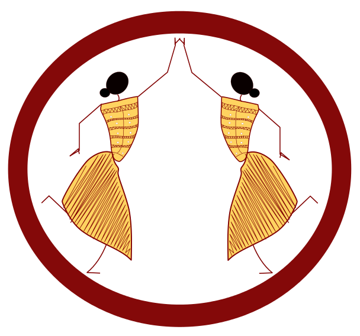
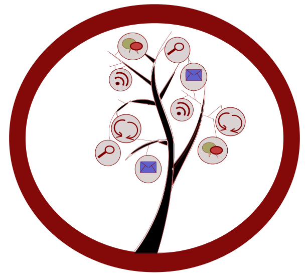
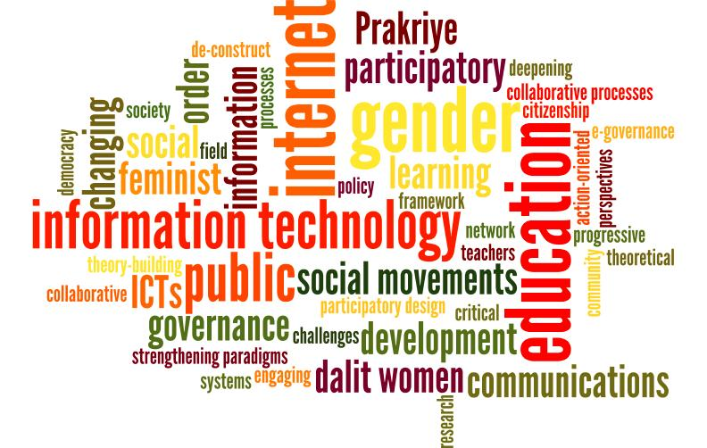
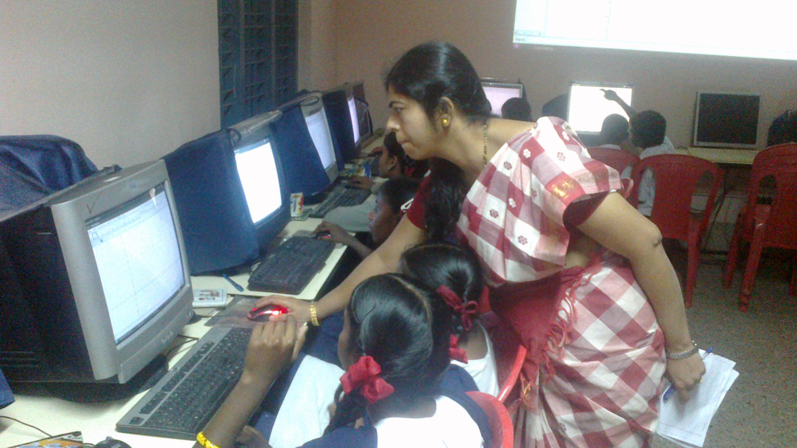
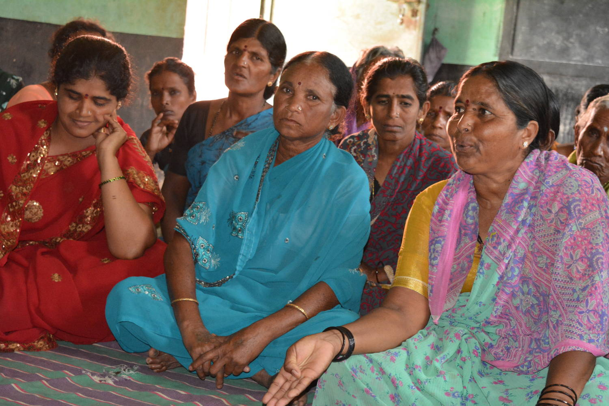
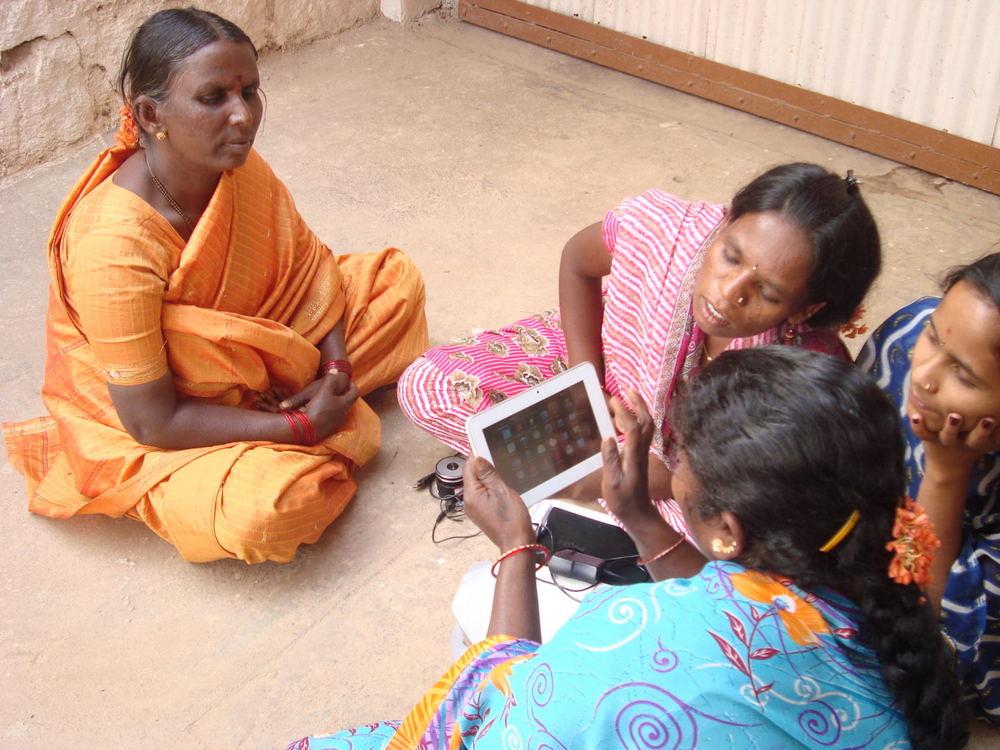
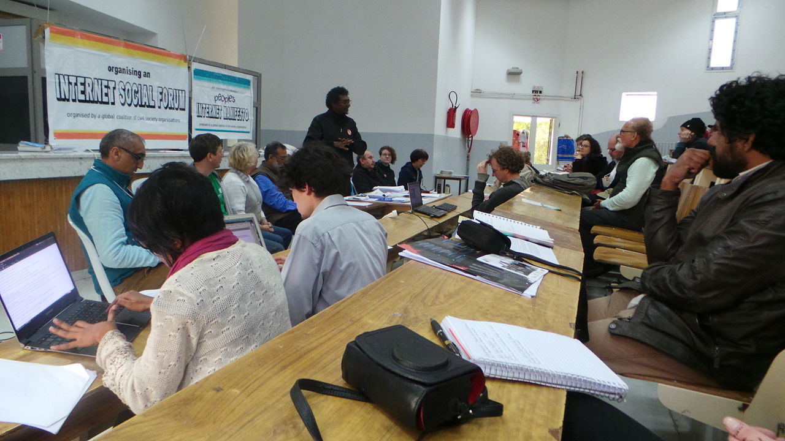

Committed to progressive social change, the IT for Change team works in a dedicated manner employing all possible means to get there - pushing the limits with cutting-edge ideas, leaving no stone unturned in our advocacy, and constantly experimenting with new innovations in the field.








ITfC has strengthened teacher training in Karnataka, and supported workshops in Delhi, Uttar Pradesh and Himachal Pradesh. Its impact has been transformational – sustaining a network of teacher educators and teachers, and promoting OERs.
Sanjaya Mishra, Education Specialist, Commonwealth of Learning, Canada
The focus of our work is on demonstrating models of technology integration for reforming and strengthening teacher education in the public school system. We believe technology should strengthen public institutions so that the vision of education of ‘equitable quality’ set out by the Indian Right to Education Act is realised.
IT for Change’s work has focussed on building institutional capacities of the public school system in the state of Karnataka, in India. The state level Subject Teacher Forum (STF) and Karnataka Open Educational Resources (KOER) programs, in Commonwealth of Learning, Canada partnership with state agencies (i.e. Department of State Educational Research and Training and Rashtriya Madhyamika Shiksha Abhiyan) and UNICEF, reached some important milestones this year.
The STF has built a community of teachers and teacher educators. It is perhaps the largest virtual professional learning community of teachers in the world belonging to a single education system. The virtual forums are emerging as spaces where teachers are sharing and critiquing processes in school education, thus taking a crucial step towards claiming their rightful role in the educational process. Teachers are collaborating to access, create and share Open Educational Resources (OERs) through the KOER wiki portal, which has had more than 2 million hits, over 2 years. In collaboration with the Commonwealth Educational Media Centre for Asia, we have been working with the District Institutes of Education and Training (teacher education institutions) across Karnataka state on integrating ICTs in teacher education, and for offering a course on ‘ICT Mediation in teaching-learning’ for their diploma in education. This has helped further institutionalise our work in Karnataka.
Our research on the STF and KOER program, as part of a Research on Open Educational Resources for Development (ROER4D) network supported by IDRC Canada, confirms our hypothesis that a teachers’ professional community of learning can support effective models of contextual OERs creation, through participatory approaches employing free and open source software. This is quite in contrast to mainstream approaches to technology in education, which aim to reduce teachers’ roles to that of minor technicians.
| STF Statistics | KOER Statistics | ||
| Members | 15,000 | Total web page views | 2.2 Million |
| High Schools | 6,000 | Web pages created | 7,000+ |
| FOSS educational applications | 15+ | Resource files uploaded | 4,000+ |
| Emails | 75,000+ | Users/Editors | 538 (teacher contributors) |
Our other engagement with the public education system has been through an intensive pilot with 16 government high schools in one block of Bengaluru Urban district.

Supported by Cognizant Foundation, this program has involved integration of ICTs in school and classroom processes, providing us important insights on how ICTs can support progressive pedagogies in government high schools. It has also thrown open some important questions on the levels of exclusion faced by children from urban marginalised sections, and the challenges faced by schools to be relevant to learners’ contexts. We seek to identify systemic approaches that can enable government school teachers improve classroom transaction and learning outcomes.An important feature of the two mentioned programs is their complementing nature. Whereas the school level learning informs the design of our larger state-wide program, the shared experiences and resources of the STF and KOER improve individual school processes. ‘Can educators shape techno-social processes towards making education truly emancipatory?’, is the question that leads us on.
Our strong relationship with the public education system gives us the credibility to influence education policy and curriculum. We are often invited to participate in curriculum and syllabus development processes for teacher education courses at graduate and undergraduate levels offered by apex government bodies at state and national levels.
Our work has clearly demonstrated a new system-wide model of teacher education, which is in line with the recommendation for self-directed and peer-based, lifelong learning of the National Curricular Framework for Teacher Education. The STF program has attracted national attention, with the review mission of the Ministry of Human Resource Development acknowledging it as a ‘good practice’ for all states to emulate. During the year, the governments of Assam and Telangana have sought our support on initiating a similar program in their states.
Go back to Thematic Areas
It is after coming to the information centre that I knew I could claim the benefits offered by the agriculture Supporting marginalised women’s claims-making department. I realised that women working in the fields are farmers too, and not just men.
Sundramma, member of a women's collective in Mysuru district, India
Prakriye is a resource centre supporting grassroots organisations and local governance institutions in Mysuru, India. Using ICT-enabled strategies, it seeks to build insights on a radically new development praxis that brings power to the peripheries.
In 2014-15, Prakriye continued work on ‘Making Women’s Voices and Votes Count’ - a project supported by the UN Women Fund for Gender Equality and National Mission for Empowerment of Women, Government of India. The project had two pillars – supporting marginalised women’s claims-making and building the leadership capacity of elected women in local self-government.
Since its inception in 2005, Prakriye has focused on enabling women from socially marginalised communities to set up ICT-enabled village information centres. Over time, these centres have become critical civic spaces for women and adolescent girls.

Young women from the community are recruited and trained as information intermediaries to manage the centres, and aggregate and distribute public information. Currently, there are 7 such information centres, each of which caters to about 4-5 villages in its vicinity. Through this project, we equipped the centres with a new MIS for effective tracking of entitlement applications, and introduced a mobile-based system on free software, to broadcast information updates, public health alerts and reminders about crucial citizen-forums. The trust reposed by poor women in the centre is a significant marker of its relevance.In 2 Panchayats (local self government bodies), Prakriye used GIS-enabled participatory mapping to conduct social audits. This process focussed on the quality of public infrastructure and civic services such as schooling, and irregularities in beneficiary selection processes. Having access to local data has enormous benefits for citizens; these benefits are amplified when citizens can generate and control their own data. The GIS based data collection process has catalysed women’s collectives to demand better civic infrastructure in some villages. Those who were left out of government subsidies were able to use the data to make a case for their rights.
We worked with elected women in 7 Panchayats using videos to trigger discussion – supporting them through IVRS messaging and enabling them to comfortably use ICT resources of the Panchayat, like the camera, normally used only by men. Building solidarities between marginalised women and their elected women representatives is vital for transforming local governance. Such linkages are often completely absent, as the political sphere is split along caste and community lines.

Prakriye came up with the idea of convening dialogues and women-only village assemblies, as a means of connecting elected women to women community leaders. Eighteen dialogue-meetings and twelve women-only assemblies were convened. These forums generated new agendas that were then brought into local governance processes. They also helped the most marginalised women effectively demand their entitlements from their local representatives. To take an illustrative case: Devamma from a village in H.D. Kote block was determined to get the government subsidy for rural housing. She approached the Prakriye team to help her make a short film about the dilapidated condition of her current house. Devamma then presented the footage in the women-only assembly and successfully argued her case. Her claim had earlier been repeatedly ignored in the general citizen forums.The project had the benefit of two other project sites – at Kutch Mahila Vikas Sangathan (KMVS) and ANANDI, women’s rights organisations in Gujarat, India. As the lead agency implementing the project, we supported both partner organisations to build perspectives and capabilities in ICT use. The collaboration also helped us deepen our own understanding.
‘Making Women’s Voices and Votes Count’ was a partnership project in which we were able to transfer our learning and embed ICTs in the core strategies of two highly respected NGOs in India. As an independent evaluation of this project observed: “This initiative has been catalytic in building innovative linkages between gender, governance and technology at KMVS, ANANDI and Prakriye.... (causing) a disruption in the traditional landscape of male control over information and communication, positioning women as key interlocutors in the local governance context”.
Go back to Thematic Areas
As both a researcher and an activist, it is always a pleasure to work with IT For Change. Their research always challenges my own thinking and praxis, inviting new avenues for both research and collaboration. Their commitments in the field, combined with rigourous and human-centred analysis, invite the respect and admiration of those who work with them. I hope to continue finding new and exciting ways of learning from and working with the team at IT For Change in our common work of building a fairer future.
Sonia Randhawa, Director, Centre for Independent Journalism, Malaysia and Board Member, ISIS International Manila
Through our research, advocacy and network-building efforts on gender and ICTs, we offer a critical perspective on technology and gender relations. We seek to be theoretically grounded in our ideas of gender justice in a world being reconstituted digitally, rejecting both tech-euphoria and techno-skepticism.
This two-year action research initiative (2012-14) explored how digital technologies can strengthen marginalised women’s engagement with local governance systems. Supported by IDRC Canada, project teams from Instituto Nupef in Rio de Janeiro (Brazil), the University of the Western Cape in Cape Town (South Africa) and IT for Change came together to study how digitally-enabled pathways promote marginalised women’s citizenship.
Through an action research methodology, the teams partnered with Afro-Brazilian women in Brazil, dalit women’s collectives in India, and young women from peri-urban neighborhoods in South Africa. Access to public information online and digital story-telling techniques were used in Brazil to bring women’s voices into local governance processes. Action research participants in India were supported to run public information centres that became the locus for a new public information culture and citizen-education. They collected data and led evidence-based dialogues with citizen forums, using community media, GIS audits of civic amenities and mobile-based IVRS networks. In South Africa, social media platforms and digital video-stories were used to create a civic consciousness among young women, to explore what it means to be ‘political’ in the post-apartheid context. These discussions led to local level campaigns on violence against women, women’s access to public employment, and safe transport services.
The study found that connectivity can open up new routes to marginalised women’s empowerment, only if it can expand their informational, communicative and associational capabilities. This presupposes policy frameworks for women’s active citizenship in the information society, so that women can participate as co-creators of the local governance digital ecosystem, rather than remain passive consumers of services.
In mid-2014, the World Wide Web (WWW) Foundation approached us to provide advisory oversight to their 10-country research and policy advocacy initiative on ‘ICTs for Empowerment of Women and Girls’, across Africa, Asia and South America. Additionally, we were also entrusted with the India component of the research.
In this dual role, we have been able to bring in a nuanced analytical perspective to the research process, also learning from the community of researchers. Our work on gender and ICTs has taught us to see empowerment as more than just a process by which women claim technology. We have alerted digital rights activists to the need for paying attention to the foundational code determining the digital architecture. Over the past year, the debates on net neutrality and zero rating have alerted us to the perils of buying into a well-packaged, but walled, Internet. We hope to bring these insights into the World Wide Web(WWW) Foundation’s research.
Over the years, we have sought to influence the ‘ICTs and women’s rights’ discourse in India through reflective learning spaces. In September 2014, we held a 3 day short course on ‘Re-Wiring Women’s Rights Debates in the Digital Age’ in New Delhi, bringing together over thirty activists, NGO leaders as well as young researchers working in the areas of women’s rights and social justice. The conversations were able to identify critical concerns straddling democracy, accountable governance and gender justice, in the digital age.
Informing advocacy processes with our learnings has been an important mandate for us. This year, we have worked with global coalitions – the Women’s Major Group and the Post-2015 Women’s Coalition – to articulate the gender and ICT connection to Sustainable Development Goals. We have also been invited by UNESCO to join the International Steering Committee of the Global Alliance on Media and Gender.
In the area of gender and ICTs, we are recognised today as idea leaders. Our contributions – emphasising that analysis on digital technologies pays heed to the historical experiences of marginality in the global south – have resonated equally with spaces of scholarship, such as conferences hosted by leading universities; policy processes including the Beijing Plus 20 review; and activist networks like MAKAAM, a platform for women farmers’ rights in India. We do realise the responsibility this brings to be a learning organisation. As digital technologies become intrinsic to women’s everyday lives, our work must be able to clearly reflect the trajectories for transformative change.
Go back to Thematic Areas
IT for Change has consistently played a role in disseminating information about the socio-political consequences of use of technology in governance. I find that IT for Change serves as an important platform to unpack perceptions about the alleged neutrality of technology in developmental efforts, by bringing together a diverse set of stakeholders from CSOs, Government, academic institutions and software professionals, thereby nurturing informed discussion on the topic.
Rakshita Swamy, Mazdoor Kissan Shakti Sangathan, India
In times of techno-mediated governance, IT for Change seeks to further the agenda of ‘deepening democracy’. Our work argues the need for bringing citizen rights and the standpoints of the marginalised to the centre of digitalised service delivery, public information systems and open data.
The United Nations Economic and Social Commission for Asia and the Pacific (UNESCAP) commissioned IT for Change to spearhead a five country research on gender and e-government in the Asia-Pacific, in mid-2014. The objective of this study – which spans Australia, India, Fiji, Philippines and the Republic of Korea – is to glean key policy insights in the area of designing e-government innovations for promoting gender equality and women’s empowerment. The country research for India is also being undertaken by IT for Change’s team.
The technicalisation of e-governance has meant adoption of gender neutral frameworks in e-government plans. What we hope to see though this research is a framework and road map for making e-government a political opportunity for inclusion and gender justice. Our field research in India has examined a mobile-based system of the state of Andhra Pradesh that enables women to report gender-based violence in the community. We also studied a web portal set up by the Kudumbashree Mission in Kerala that promotes discussions on gender issues among women’s collectives situated in different locations in the state.
The study found that connectivity can open up new routes to marginalised women’s empowerment, only if it can expand their informational, communicative and associational capabilities. This presupposes policy frameworks for women’s active citizenship in the information society, so that women can participate as co-creators of the local governance digital ecosystem, rather than remain passive consumers of services.
Initial findings show how the design of the e-government ecosystem directly impacts outcomes for gender justice. Open Data and proactive disclosure policies, effective management of Public Private Partnerships in e-government initiatives, and clear safeguards for data privacy and security, all have a role to play in women’s empowerment through e-government.
The key findings of the five country research will be published in November 2015 in the form of a synthesis report that addresses policy makers in Asia-Pacific.
Over the past year, we have influenced policy processes at national and state levels – arguing for the strategic use of ICTs to achieve the goal of decentralisation and local self-governance and to promote citizen participation in local governance. Our field pilots have enabled us to engage with the state committee for revision of the local governance legislation. We have also joined the National Forum for Action on Convergence, a pan-India network, to advocate for a convergent service delivery system that is responsive to the needs of the most marginalised sections. Calling civil society actors to reject centralised ICT-enabled service delivery models, we have proposed alternative models that use technology to put communities at the centre of public services and governance.
Our work has drawn us into various learning partnerships. With the Department of Economics, St. Teresa’s College in Eranakulam, Kerala, we designed an impact study for their e-jaalakam (e-window) initiative for taking ‘e-government literacy’ to people. As a member of the evaluation team studying Sanchar Shakti, a value-added mobile services program of the Department of Telecommunications, Government of India, we contributed a report that was received with considerable interest.
Our e-governance research, network-building with civil society organisations and engagement with policy makers has helped us stay at the cutting edge of the emerging discourse on integrating technology into governance systems. Telecommunications and e-governance policies are a significant part of the current government’s Digital India initiative. Through our leadership, we hope to influence its evolution, ensuring that citizenship concerns are at the centre of the debate.
Go back to Thematic Areas
A characteristic of IT for Change, unusual in the research sector, is its ability to analyse and engage with both local grass-roots development issues and high level policy. This is central to being able to link social justice issues with internet governance structures; and to introduce an element of genuine democracy into the Internet governance domain.
Sean O Siochru, Nexus Research and long-standing Communications Rights Activist, Ireland
In our engagement with Internet governance, we strive to democratise technologies and their control, and for this purpose, advocate appropriate global and national governance models. We are striving to build a people’s movement in this area, for no serious shift of power can take place without a struggle by those who desire it.
Last year, IT for Change co-founded, and took charge of the secretariat of, the Just Net Coalition (JNC). Within a year, JNC has become a major civil society voice in global policy forums.
Throughout this year, JNC engaged with, and made submissions in, all key areas of global governance, be it the annual BRICS summit, the International Telecommunication Union’s Plenipotentiary conference, ICANN’s oversight transition, the UN Human Rights Council report on privacy, the Italian Draft Declaration of Internet Rights, or UNESCO’s processes on engagement with Internet issues. Few global coalitions can boast of such a wide range of engagement with Internet issues. For JNC, being able to arrive this far in the first year of existence, with little financial resources, can be considered a singular achievement.

Along with other groups, IT for Change mounted a strong opposition to the Netmundial Initiative – an effort by dominant global political and economic actors to define a new locus for the global governance of the Internet, centred on the World Economic Forum. Taking a leaf out of the World Social Forum (WSF) that was set up as a counterpoint to the World Economic Forum, we put out a call for an Internet Social Forum. Many groups and individuals from across the world have responded to this call with enthusiasm. We held a workshop at the 2015 WSF in Tunis, to galvanise the idea and build its emerging contours. The workshop issued the ‘Tunis Call for a People’s Internet’. The Internet Social Forum will now be held as a thematic forum of the World Social Forum in 2016.With a view to counter the economic and political hegemony of the US over the Internet, IT for Change helped organise a BRICS panel at the Russia Internet Governance Forum, in April 2015. Here, we presented a concrete proposal for institutionalising a framework of close cooperation among the BRICS countries on economic and social issues pertaining to the Internet, also writing about it in the popular media.
Among key Internet governance issues, net neutrality has been the most prominent over the last year. We are a founding member of the Global Coalition on Net Neutrality, and we have helped hone its definition for net neutrality. We have emphasised that the Internet be maintained as an open platform for promoting equality of opportunity. Net neutrality does not only concern anti-competitive practices, but also people’s freedoms in social, economic and cultural fields.
In India, we participated in campaigns for net neutrality, responding to the consultation exercise undertaken by Government of India on this issue. As the debate acquires momentum in India, we have taken a strong position against net neutrality violations and practices like zero rating. Our unique contribution to the net neutrality debate, which was noted in a government report on the issue, has been to stress its egalitarian basis in contrast to the largely liberal framework in which the issue gets cast. This is why we have argued that protective discrimination in favour of legally mandated public interest content should not fall in the same bracket as commercially motivated zero rated content.
In this regard, we made a point in the Economic and Political Weekly about how ‘Net Neutrality is Basically Internet Egalitarianism’, and held a workshop on ‘Regulating the Internet in public interest – Net neutrality and other issues’, in May 2015. We stressed that the question is not about whether the Internet should be regulated or not; it is about how it can be regulated in public interest.
At a critical time in history when the powerful enabling Internet technology is severely threatened, risking death of the promise of a truly equitable, fair and prosperous global order, it’s heartening to witness the great work being championed by ITfC. At the vanguard of securing the Internet from privatisation and extremism, ITfC has excelled in leading the JNC forum – a group of unrelenting Internet Freedom Fighters, resolute on ensuring that the Internet remains free and open to all the people around the world.
Alex Gakuru, Executive Director, Content Development & Intellectual Property (CODE-IP) Trust Kenya
Over the past year, our work has contributed to shaping a progressive global constituency in the Internet governance arena, dominated as it is by liberal, even neoliberal, ideologies. As our network grows, we are also seen as key voices articulating a Southern perspective. We have begun to make a mark on new regulatory regimes developing around the Internet – attuning them to social and economic rights of people.
Go back to Thematic Areas
From mobilising thousands to protect and defend the Open Internet for all, to bringing social justice and women rights to the core of its agenda, IT for Change is the public interest voice, translating solid principles into actions to improve access, equality and rights for all Indians, especially those who need it the most. At Web We Want, we work closely with them and consider the organisation global south leaders. We learn from them every day.
Renata Avila, Web We Want Initiative, WWW Foundation
The affordances of digital technology herald new possibilities for the information and knowledge commons, and for collaborations across geography. But this promise can be realised for the empowerment of marginalised people only if the evolutionary path of technology can be appropriately influenced by frameworks of equity and social and economic justice. This vision is at the core of our approach to development.
At IT for Change, we have been keen to create a space where research scholars, development practitioners and activists from across the world, can discuss and deliberate upon the question of inclusion and exclusion in the network society context. In this regard, with support from IDRC Canada, we organised a Round Table bringing together 28 participants, in October 2014.
A key insight from this forum was that inclusion may not be obtained with connectivity. On the contrary, connectivity may exacerbate exclusion, as the terms of participation in emerging digital networks are determined by powerful Internet intermediary companies and not by citizen-users. Discussions also pointed to how the potential of the Internet to emerge as a site for a global knowledge commons and a new-age agora for free political expression is thwarted by a new form of capitalism that is built over manipulation of personal data. Participants identified future research directions in the field of networks, development and inclusion, key among which are the need to critically unpack the idea of digital openness and interrogate platform-power.
Data that emerges out of digital networks is perhaps the most powerful economic resource today. It has become a site of contestation between states and citizens, and between powerful corporations and individual users. We contributed to the conceptual thinking around this phenomenon through our commentary on the ‘network data complex’ (the powerful economic alliances trying to dominate the world through data control) in the special edition of GenderIT.org that commemorated the life and work of academic and activist, Heike Jensen. Our inputs into the Asia Pacific Regional CSO Engagement Mechanism (AP-RCEM) has helped bring data governance issues into civil society discussions and responses to the UN Secretary General’s Report on the post-2015 agenda.
Our global policy work in relation to the post-2015 agenda also took us to the High Level UN event in New York on ‘Contributions of North-South, South-South, Triangular Cooperation, and ICT for development to the implementation of the Post-2015 Development Agenda’. Here, we emphasised the importance of a public goods framework, in realising the potential of ICTs as an effective means of implementation of the post-2015 development agenda.
Our effort to bring conceptual rigour to the field of development in the network society has contributed to a shared vocabulary among progressive groups. This has widened our constituency, making possible many collaborations across rights struggles and policy areas where concerns for structural exclusion are framed and asserted.
Right from 2009, when there was a push for ‘Open Development’ among the global funding community, we have been a critical voice establishing the distinction between digital openness and public-ness. Our work this year has continued to push thinking, deliberation and policy advocacy in this direction of asking the hard questions of where power lies, and what new forms of social exclusion are emerging in the age of big data and platform-politics.
Go back to Thematic Areas